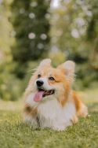

Corgi by Pexels
History
Pembrokeshire and Cardiganshire are adjoining historical agricultural counties in South West Wales. Welsh Corgis were cattle herding dogs, the type of herding dog referred to as "heelers", meaning that they would nip at the heels of the larger animals to keep them on the move. The combination of their low height off the ground and the innate agility of Welsh Corgis would allow them to avoid the hooves of cattle. The term "Corgi" means either cur dog or dwarf dog (cor = dwarf, gi = lenitive of ci, dog) in the Welsh language, which was not intended as an insult to the dog's size, rather as a purely descriptive term. Different tales have been told of the Corgi's origin; some believe that the two modern breeds evolved from shared ancestry, while others attribute the import of the Pembroke Welsh Corgi to Flemish weavers starting around the 10th century. Further theories on the origin of the Pembroke variety suggest that they may have originated from central European herding breeds from the area around modern Germany. Depending on the time when these dogs were imported to Wales, they could have been either Deutsche Bracken or Dachshund. The Cardigan Welsh Corgi has been attributed to the influences of Nordic settlers in the region. Dogs of similar dimensions exist in modern Scandinavia, called the Swedish Vallhund, and it is claimed by some historians that these two breeds share a common ancestor. In the late 19th century, farmers began to switch from cattle to sheep, but the Corgi is not suited for working sheep. Similarities between the Welsh Corgis have been attributed to crossbreeding between the two, or simply selected breeding from those who wished to have the Cardigan variety appear closer in nature to the Pembroke. The first recorded date for Corgis appearing in the show ring in Wales is 1925. Captain J. P. Howell called together a meeting of breeders of both the Pembroke and the Cardigan varieties and formed the Welsh Corgi Club, with an initial membership of 59 members. A general breed standard was drawn up, and Corgis began to appear in conformation shows. Until this point, neither breed had been specifically bred for looks. Members of this club were primarily interested in the Pembroke variety, although the Cardigan variety also appeared. At that point, the breeds were referred to as the Pembrokeshire and Cardiganshire varieties; the names were later shortened. There were a number of disputes between breeders of the two types in early shows, as judges who were breeders of one type would often favour them. The Welsh Corgi appeared at Crufts—a dog show held annually in the United Kingdom—for the first time in 1927. The first championship was awarded at a Cardiff show in 1928, to a red and white Pembroke bitch named Shan Fach. The breeds continued to be judged together until 1934, when the Kennel Club recognized each breed separately. In that initial registration, some 59 Cardigans and 240 Pembrokes were listed in the pedigree books. The decisions about the breed to which each dog belonged were sometimes left to the owners, who were free to choose whichever they felt was the most appropriate. The first dog to be named best-in-show at an open conformation show was Ch. Bowhit Pivot. Cardigan Welsh Corgis continued to be rarer than Pembrokes, with only 11 registrations made in 1940. Both breeds survived the Second World War, although the Cardigans registered with the Kennel Club numbered only 61 by the end of the war. Pembrokes became very popular during the postwar years in the United Kingdom; in 1953, it was ranked as the fourth-most popular breed by the Kennel Club, behind the English Cocker Spaniel, the German Shepherd, and the Pekingese. In 1955, the reserve Best in Show at Crufts was the Pembroke Welsh Corgi Kaytop Maracas Mint. The Corgi breeds declined in popularity: veterinary physician Brian Singleton suggested in The Times in 1963 that this was due to issues with their temperament. The Cardigan Welsh Corgi was listed in the Kennel Club's first list of Vulnerable Native Breeds in 2006. This list is for those breeds which register less than 300 dogs in any one year; there had been 84 Cardigan Corgis registered in 2006. After an initial increase, this declined to 46 in 2010, but then rose to the highest numbers since the list began in 2015, with a total of 124 puppies registered. In 2013, the Pembroke Welsh Corgi was also added, as there had been only 241 puppies registered that year. While the Kennel Club blamed this on the importation of foreign dog breeds, The Daily Telegraph blamed the decline on the ban on tail docking introduced six years before. However, 2015 had an increase of 34% in the number of Pembroke registrations; the popularity of Corgis on Instagram was credited for the change. Pembrokes were removed from the Vulnerable Native Breeds list in 2016.